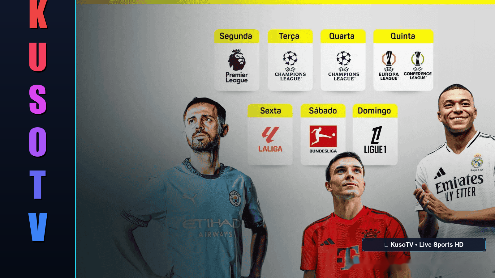

K
U
S
O
T
V
dark themes

Klik salah satu pertandingan di bawah untuk menonton siaran
Liga
Pukul 19.30 WIB
Tim 1
VS
Tim 2
SIARAN DIMULAI DALAM
00
HARI
:
00
JAM
:
00
MENIT
:
00
DETIK
Siaran langsung akan tayang otomatis saat kick-off
Tonton Saluran Live Preview
Memutar Siaran Live
Hitung Mundur
Live Event
Semua
Hot Event
Liga Indonesia
Liga Inggris
Liga Italia
Liga Spanyol
Liga Jerman
Liga Perancis
Liga Belanda
Liga Portugal
Liga Champions
Championship
Conference League
AFF League
Pertandingan besok
Pertandingan hari ini
Pertandingan kemarin
Jadwal pertandingan
Memuat jadwal pertandingan...